EasyBuild + EESSI + Spack event at CINECA
A joint EasyBuild, EESSI, and Spack tutorial + hackathon was organised in Bologna (Italy) on 19-21 May 2026. It was hosted by CINECA, who operate the Leonardo EuroHPC JU supercomputer, and was co-organised by representatives of the MaX and MultiXscale EuroHPC Centres-of-Excellence.
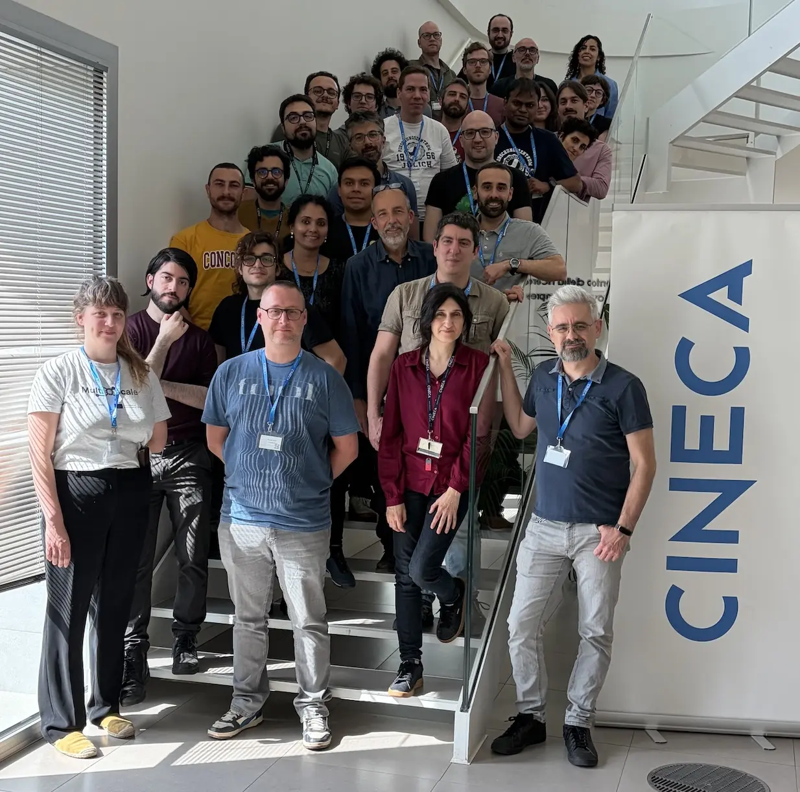
The event featured presentations by core developers of all three projects, and allowed attendees from CINECA, MaX, ECMWF, and the EBRAINS project to freshen up their knowledge, learn about recent developments, and gain extensive hands-on experience while having direct access to experts.
Although EasyBuild, EESSI, and Spack already have well-established communities for a long time, even over a decade for both EasyBuild and Spack, a joint event that brings together their communities like this was a first.
Slides and recordings of all presentations are available.
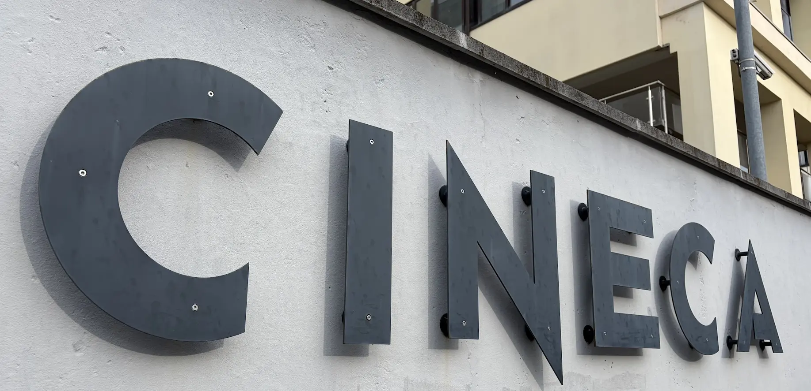
Day 1: Introductions
Nicola, who took the lead on the local organisation, kickstarted the event with a short speech to outline the agenda and high-level goals, and thanking attendees to actively participate.
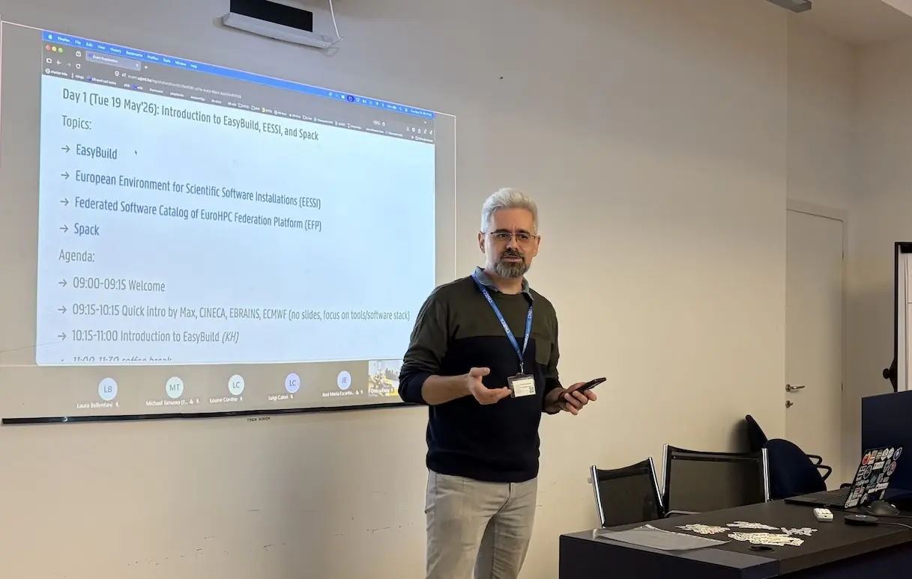
The first day focused on introductory presentations to all three projects. While most attendees were more familiar with just one of the projects, they appreciated being brought up-to-speed on recent developments of not just that particular project, but also other projects that focus on the ubiquitous challenge of installing scientific software on HPC systems and beyond.
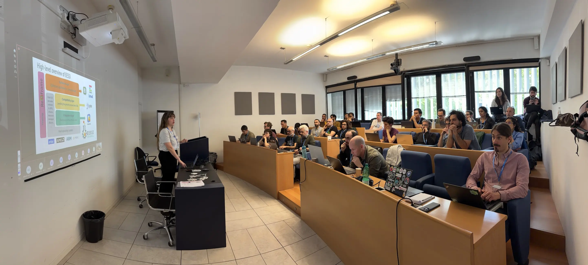
The questions and discussions that took place during and after each presentation quickly made it clear that a cross-project event like this encourages the exchange of knowledge and experience. Attendees felt more than comfortable to raise in-depth technical questions, and presenters were happy to go "off script" while providing answers, often doing impromptu hands-on demos along the way.
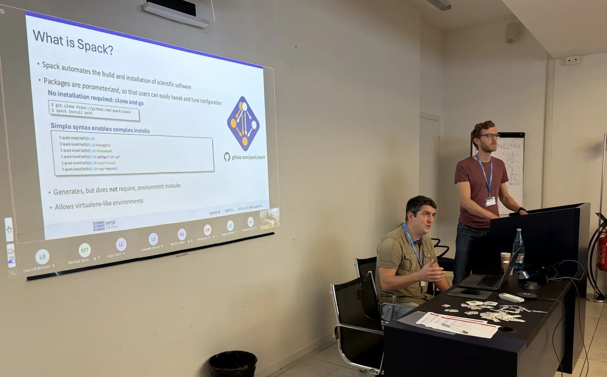
Attendees were also introduced to the EuroHPC Federation Platform, with particular focus to the Federated Software Catalog component, which is based on EESSI.
Alan showed a hands-on demonstration of using the EFP Interactive component, the federated Open OnDemand instance which, for example, allows for easily starting an interactive desktop to run graphical applications on each of the EuroHPC supercomputers.
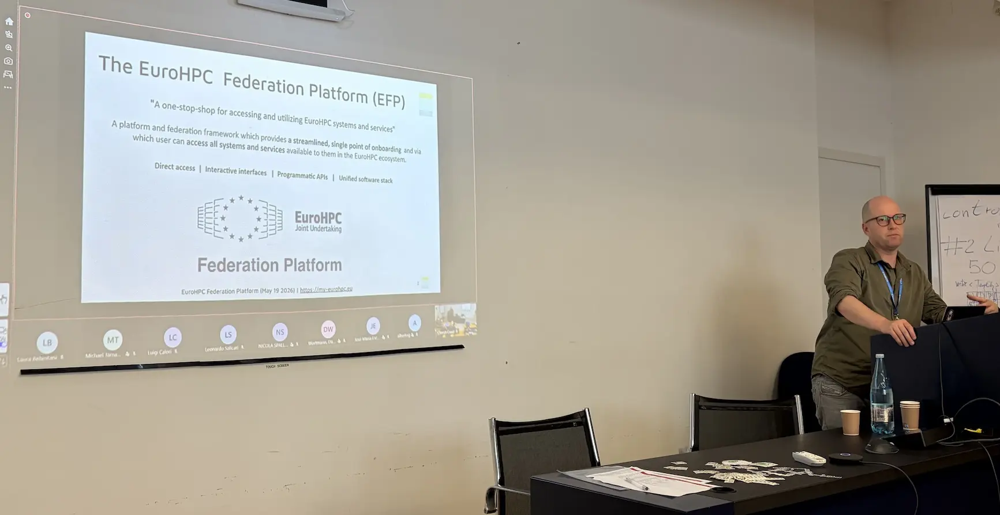
Slides and recordings of these presentations are available:
- Introduction to EasyBuild: slides, recording
- Introduction to EESSI: slides, recording
- Introduction to Spack: slides, recording
- Introduction to the EuroHPC Federation Platform: slides, recording
You can also watch the recording of the introduction to EasyBuild right here:
Day 2: Advanced topics
On the second day of the event, we focused on topics beyond the basics:
- Workflow for adding additional software to EESSI (slides, recording)
- Software Deployment CI/CD pipelines in GitLab with Spack (slides, recording)
- Installing software on top of EESSI (using EESSI-extend, buildenv) (slides, recording)
- Using EESSI in Continuous Integration (CI) environments (slides, recording)
- Spack-driven Development Workflow (presentation material, recording)
- Using Spack on top of EESSI (incl. in GitHub Actions) (slides, recording)
- Containerization of software with Spack (presentation material, recording)
- Best practices for reproducible builds (presentation material, recording)
While the focus here seems to shift away from EasyBuild a bit, it is actually still prominently featured in several of these talks, in particular the one on installing software on top of EESSI, where EasyBuild is the primary tool of choice:
During the discussion and Q&A that emerged naturally when covering these more advanced topics, the value of a joint event like this really became apparent. Ideas and counter-arguments were shared in collaborative spirit, and in-depth technical questions were raised by the attendees.
After the series of presentations covering advanced topics, attendees were invited to get their hands dirty during the open hands-on session. Everyone focused on a particular problem or idea that they felt was most interesting to work on, and where needed they got help from the EasyBuild, EESSI, and/or Spack developers.
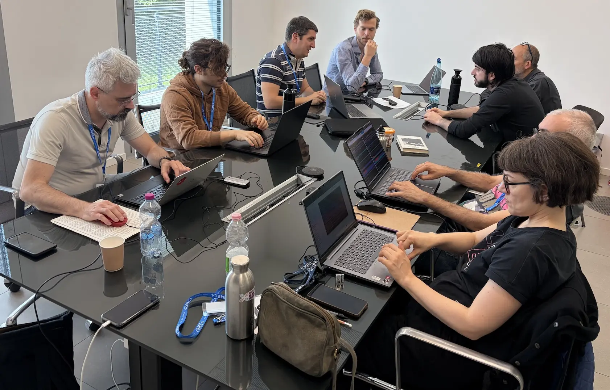
Day 3: Open hands-on session
The last day of the event consisted solely of a "choose your own adventure" style hackathon.
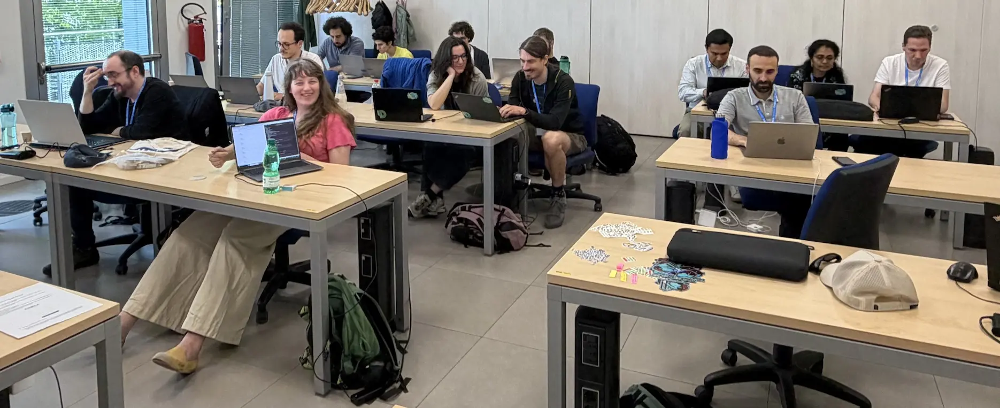
Attendees either continued where they left off the day before, or explored other ideas. Some worked in pairs, others preferred to work in isolation.
The coffee and lunch breaks throughout the event invited attendees to discuss related topics even further.
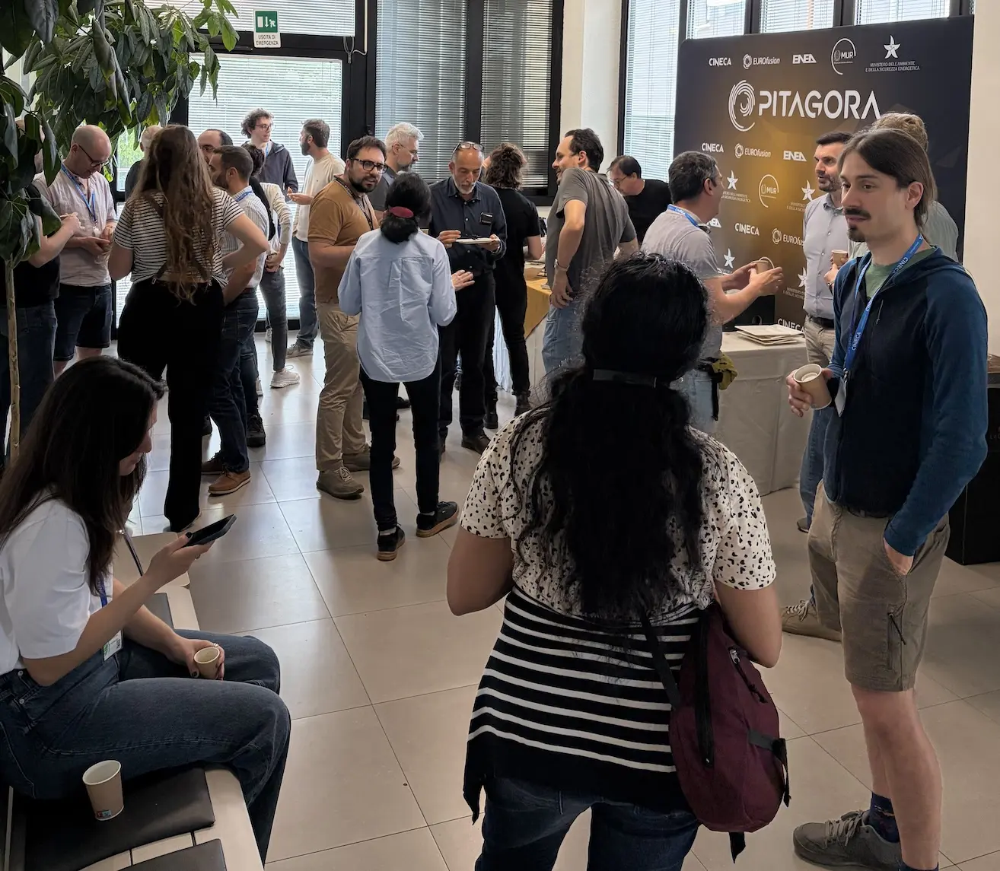
Bonus: Tour of ECMWF datacenter
At the end of the third day, we were invited by Oriol to visit the European Centre for Medium-Range Weather Forecasts (ECMWF) datacenter located in Bologna. We were lucky enough to have Martin Palkovic, Director of Computing at ECMWF, be our tour guide.
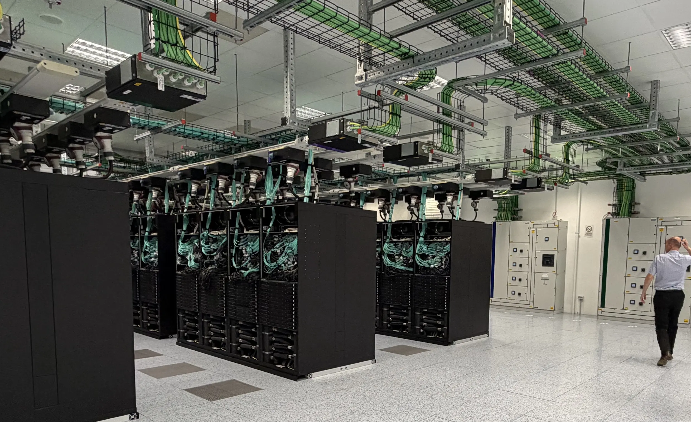
We walked by several of the four server rooms with identical setups, and visited the data rooms which housed massive amounts of tape drives and several tape robots that are part of the data archival facilities that ECMWF maintains.
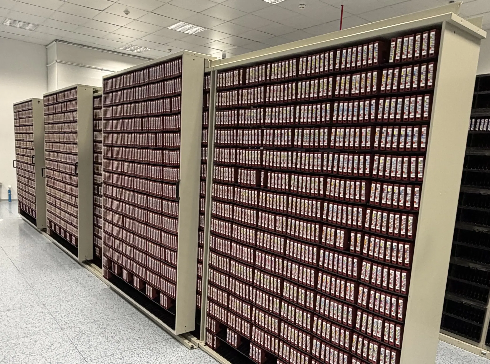
The backup power system and cooling infrastructure were nothing short of massive. This infrastructure is critical to the mission of ECMWF, which is to provide weather forecast updates for Europe every 6 hours.
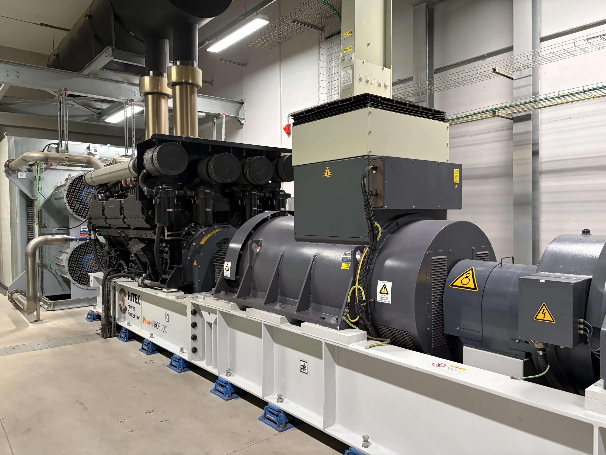
The fact that ECMWF has never missed a forecast since they started the service in 1975, despite power cuts and unexpected downtime in parts of their infrastructure, is very impressive.
We have visited many datacenters in the past years, but this was definitely one of the largest and most professional!
Check out the video below to get a feeling of it yourself: